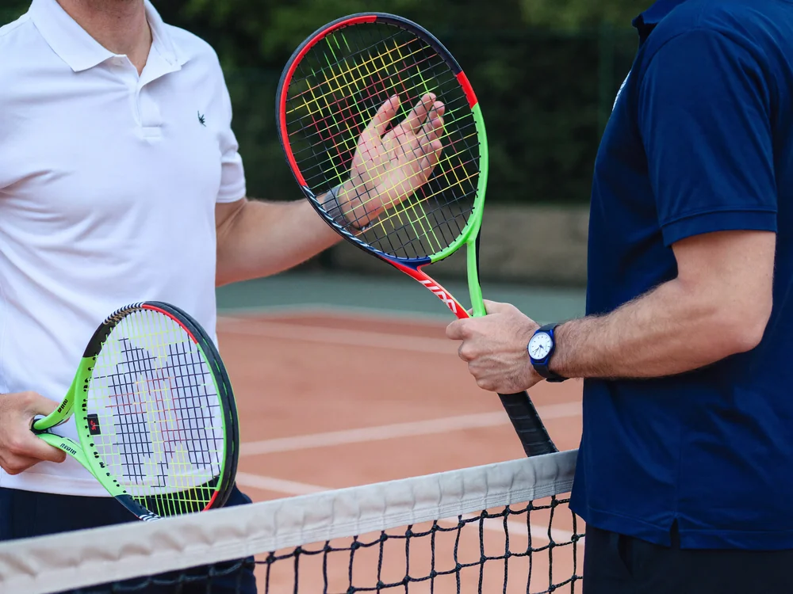
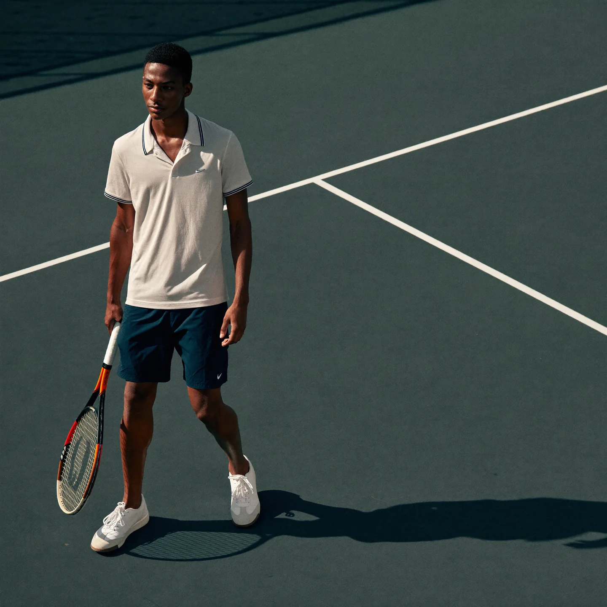
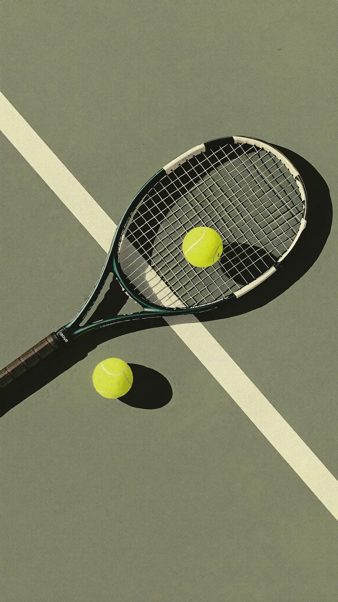
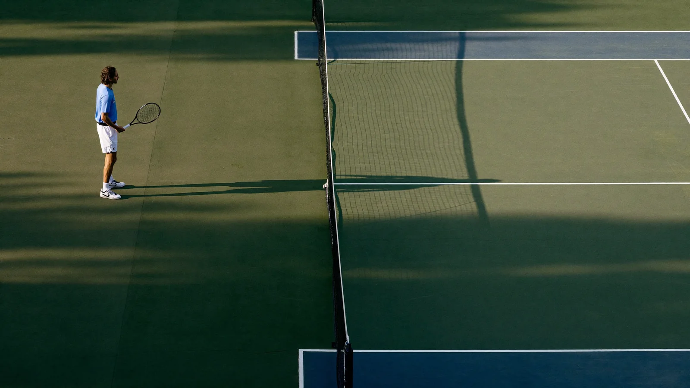

가까운 코트, 원하는 시간에.
내 주변의 매칭을 찾고, 원하는 날짜와 시간에 맞는 경기에 참여하세요.
THE GAME IS READY BUT,


시간도, 장소도, 실력도 맞는 사람을 찾기란 생각보다 어렵습니다. 카페 글은 답을 기다려야 하고, 겨우 잡은 약속은 노쇼로 끝나기도 하죠.

새로운 만남이 하나의 랠리가 되고, 한 번의 플레이가 더 큰 즐거움으로 이어지도록.
온코트는 테니스의 가능성을 넓혀갑니다.
일정과 실력에 맞는 새로운 테니스 파트너를 만나보세요.
내 주변에서 열리는 경기와 새로운 플레이 기회를 발견하세요.
새로운 만남을 실제 코트 위의 플레이로 이어가세요.
함께하는 경기가 쌓이며 더 큰 테니스 커뮤니티로 이어집니다.
일상적인 매칭을 넘어 새로운 경기와 대회에 도전하세요.
동네 모임 경기부터 클럽 토너먼트까지, 대회 참가와 운영을 한곳에서 이어가세요.
함께할 사람을 찾는 순간부터, 다음 경기의 즐거움까지.
Questions
자주 묻는 질문 9가지
온코트(OnCourt, 구 테친소)는 한국 테니스 동호인을 위한 테니스 매칭·대회 앱입니다. 내 주변 테니스 친구를 매칭 수수료 없이 찾고, 함께 친 상대가 남긴 리뷰 NTRP와 매너 점수로 실력과 매너를 미리 확인할 수 있습니다. 개인전·단체전 테니스 대회 참가부터 주최자를 위한 AI 테니스 대회 관리 프로그램(웹 대회 운영 콘솔)까지 한곳에서 제공합니다.
온코트 앱에서 내 주변에 올라온 테니스 매칭에 참여하거나, 직접 매칭을 만들어 함께 칠 사람을 모으면 됩니다. 매칭에는 게임 방식과 NTRP 범위, 코트가 표시돼 실력이 맞는 상대를 고르기 쉽습니다. 가입하면 카페 등업 같은 절차 없이 바로 매칭을 올리고 참여할 수 있어요.
없습니다. 온코트의 매칭 참여와 커뮤니티 같은 핵심 기능은 매칭 수수료 없이 완전 무료입니다. 코트 대여료처럼 실제 운동에 드는 비용만 함께 치는 사람들끼리 나누면 됩니다.
네, 같은 앱입니다. 테친소에서 온코트로 이름만 바뀌었고, 기존 계정과 매칭 기록, 리뷰가 그대로 유지돼 다시 가입할 필요가 없어요.
NTRP는 테니스 실력을 숫자로 나타내는 등급 체계로, 온코트에서는 비슷한 실력의 파트너를 찾는 기준으로 씁니다. 프로필에 내 NTRP를 0.5 단위로 설정하면 매칭글과 프로필에 함께 표시됩니다. 매칭을 만들 때 참여할 수 있는 NTRP 범위를 정해 실력대가 맞는 사람끼리 모일 수 있어요.
리뷰 NTRP는 함께 경기한 상대가 매칭 후 남긴 실력 평가를 모아 보여주는 온코트의 실력 지표입니다. 스스로 입력하는 프로필 NTRP와 따로 표시되고 매너 점수와 함께 확인할 수 있습니다. 처음 만나는 상대라도 실력과 매너를 미리 가늠할 수 있어요.
온코트는 매칭이 끝난 뒤 서로 남기는 리뷰로 매너 점수와 리뷰 NTRP를 쌓아 프로필에 보여줍니다. 매칭에 참여하기 전에 상대의 매너 점수와 리뷰를 확인하면 약속을 잘 지키는 사람을 고를 수 있습니다.
네, 온코트 앱에서 개인전과 단체전 테니스 대회를 찾아 신청할 수 있습니다. 파트너와 함께 신청하고 입금 안내를 받은 뒤, 참가 확정과 대진표 공개, 내 경기 임박 알림을 앱으로 받습니다. 대회를 직접 열고 싶다면 웹 대회 관리 콘솔에서 운영할 수 있어요.
온코트는 iPhone용 App Store와 안드로이드용 Google Play에서 무료로 설치할 수 있습니다. 이미 테친소를 쓰고 있었다면 앱을 업데이트하면 같은 계정으로 온코트를 이어서 쓸 수 있어요.
온코트에는 15,000명이 넘는 테니스 동호인이 함께하고 있습니다. 지금까지 15,500건 이상의 테니스 매칭이 열렸습니다. 전국 2,900곳 이상의 테니스코트 정보가 등록되어 있습니다. 대회도 160개 넘게 온코트에서 열렸거나 참가자를 모집하고 있습니다.
온코트가 코트 위에서 쌓아 온 기록이에요. 숫자로 확인해 보세요.
15,000+
전국의 동호인이 온코트에서 함께 칠 사람을 찾고 있어요.
15,500+
지금까지 온코트에서 열린 테니스 매칭이에요.
2,900+
전국의 테니스 코트 정보가 등록되어 있어요.
160+
온코트에서 열렸거나 참가자를 모집 중인 대회예요.
NEXT
MATCH
다음 랠리는 당신 차례예요.